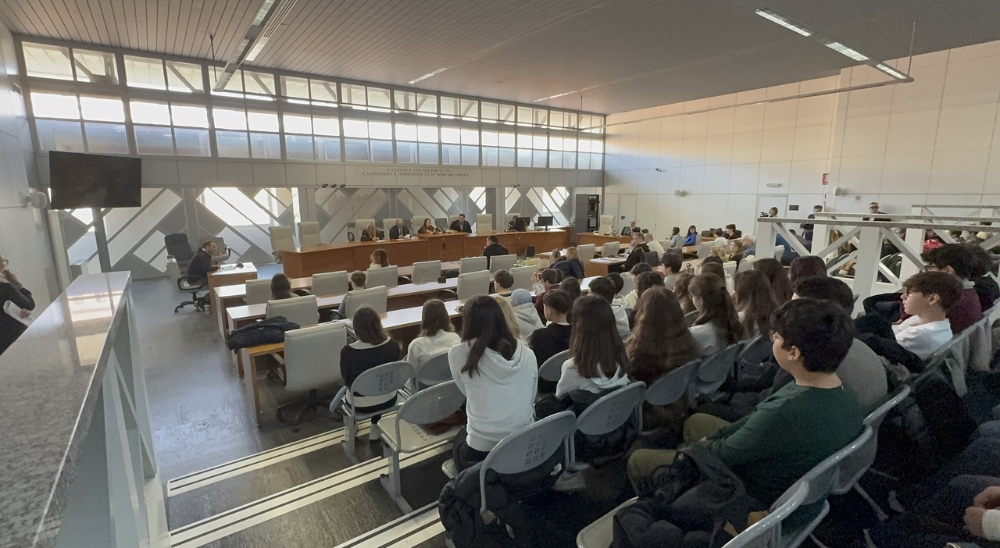

Esperienza con l'Unione delle Camere Penali, Tribunale di Ancona
Il progetto
Nel corso dell'anno abbiamo partecipato al progetto dell'Unione delle Camere
Penali Italiane,
dedicato all'educazione alla legalità e ai principi costituzionali del processo penale.
Il percorso si è concluso con la partecipazione a un'udienza reale presso il
Tribunale di Ancona, un'occasione per osservare da vicino il funzionamento concreto
della giustizia penale, dopo averne studiato i principi teorici in aula.
L'udienza: un caso di appello

Durante la visita abbiamo assistito a un'udienza di appello che riguardava
un'imputazione per furto aggravato. In primo grado l'imputato era stato condannato
sulla base della testimonianza di un unico testimone oculare e di un video di
sorveglianza di qualità scarsa.
In secondo grado la difesa ha messo in discussione l'attendibilità dell'identificazione:
il video non permetteva di riconoscere con certezza i tratti del volto, e la
testimonianza era stata raccolta diversi mesi dopo i fatti, in condizioni di scarsa
visibilità. Il difensore ha sottolineato come il principio dell'oltre ogni
ragionevole dubbio non potesse considerarsi soddisfatto solo sulla base
di questi elementi.
La Corte d'Appello ha accolto le argomentazioni della difesa e ha
assolto l'imputato per insufficienza di prove, riformando
la sentenza di primo grado.
Riflessioni personali
Quello che mi ha colpito di più è stata la differenza tra come immaginavo un processo,
basandomi su film e serie TV, e la realtà osservata in aula: un'udienza fatta
soprattutto di lettura di atti, argomentazioni tecniche e tempi lunghi, dove il
dettaglio,come la qualità di un video o l'attendibilità di un ricordo a distanza
di mesi, può cambiare completamente l'esito di un giudizio.
Questa esperienza mi ha fatto capire quanto sia importante, anche nel mio campo,
la precisione dei dati: una prova "debole" dal punto di vista tecnico, come un
video sfocato o una registrazione di scarsa qualità, può avere conseguenze enormi
sulla vita di una persona. È un parallelo che trovo significativo anche pensando
alla sicurezza informatica, dove la qualità e l'integrità dei dati raccolti
possono determinare la correttezza di qualsiasi conclusione.